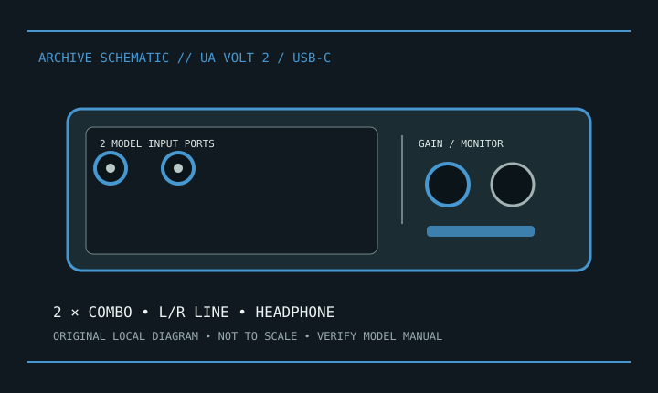

[ INDIVIDUAL COMPONENT // SOUND HARDWARE ]
Universal Audio Volt 2
Volt 2 is UA’s compact two-input/two-output USB recording interface. Not Volt 276, which has an additional analog compressor feature.

Model-specific specifications
| Product | Universal Audio Volt 2; not Volt 276 or bundle-specific configuration. |
|---|---|
| Host | USB-C audio; bus-powered when the host supplies required power. |
| I/O | Two XLR/TRS combo mic/line/instrument inputs, stereo balanced line outputs, headphone output. |
| Conversion | UA publishes 24-bit/192 kHz conversion for Volt 2. Vintage mode is an analog input-circuit option. |
| Preamps | Two mic preamps, switchable 48 V phantom, Vintage preamp mode on inputs. Enable phantom only for compatible equipment. |
| Monitoring/MIDI | Direct monitoring; no DIN MIDI ports on Volt 2. |
| Software | UA lists macOS, Windows, and supported mobile workflows; confirm host and power requirements. |
Compatibility & preservation
Retain cable, registration information, and model-specific UA Connect installers. Label 48 V state before changing microphones; avoid phantom power unless a connected device permits it.
- Photograph the model/revision label, connector panel, and installed/bundled accessories before service.
- Retain manufacturer manuals, original driver/firmware packages, and known-working configuration notes with the hardware.
- Use the specified signal level, connector wiring, and power requirements; connector fit alone does not prove compatibility.
Manufacturer sources
- Universal Audio — Volt 2Manufacturer I/O, conversion, preamp and software details.
- Universal Audio — Volt supportManufacturer model-specific manuals and host/software help.